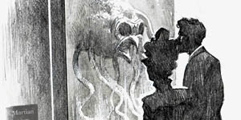
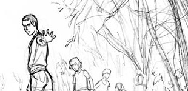
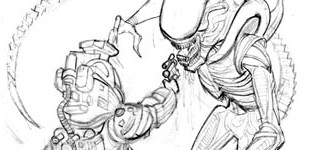
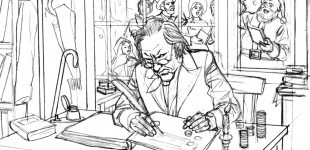
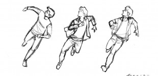
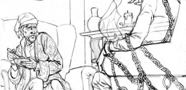
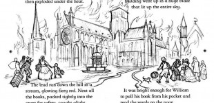
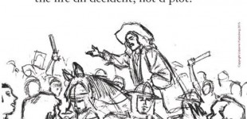
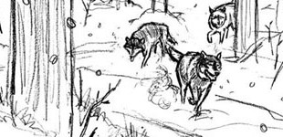
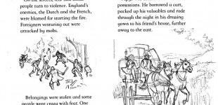

Online portfolio and blog

May 19, 2023
Jan 24, 2023
Jan 22, 2023
Jan 21, 2023
Jan 13, 2023

Jan 09, 2023

May 27, 2020

Dec 17, 2018
Oct 25, 2018
Mar 01, 2018
Oct 29, 2017

Mar 16, 2017

Jan 28, 2017
May 30, 2016

Oct 18, 2015


